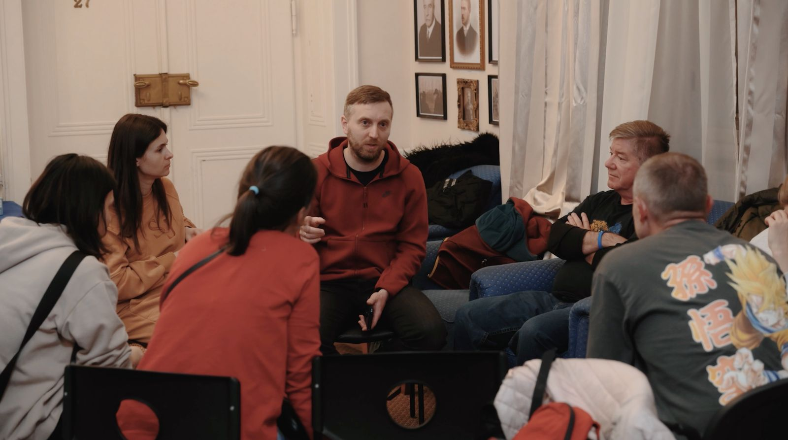
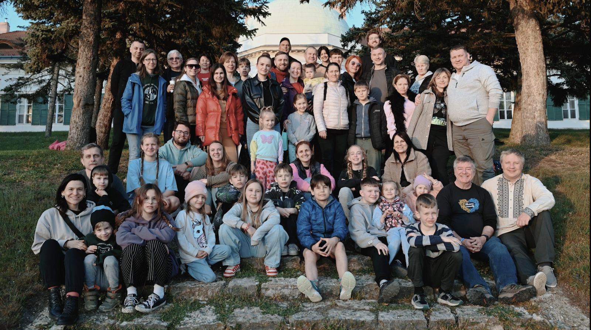
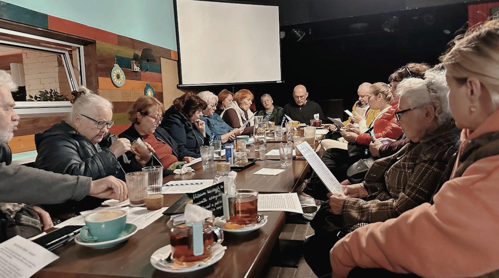
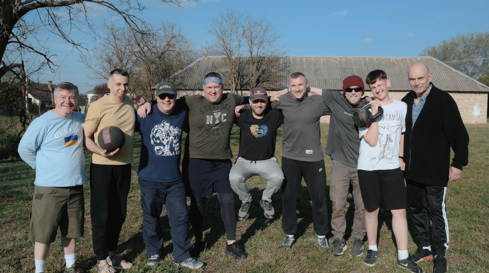
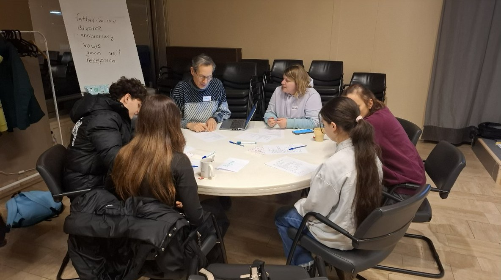
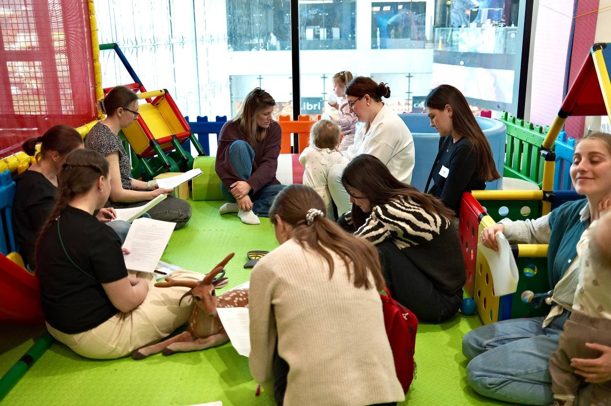
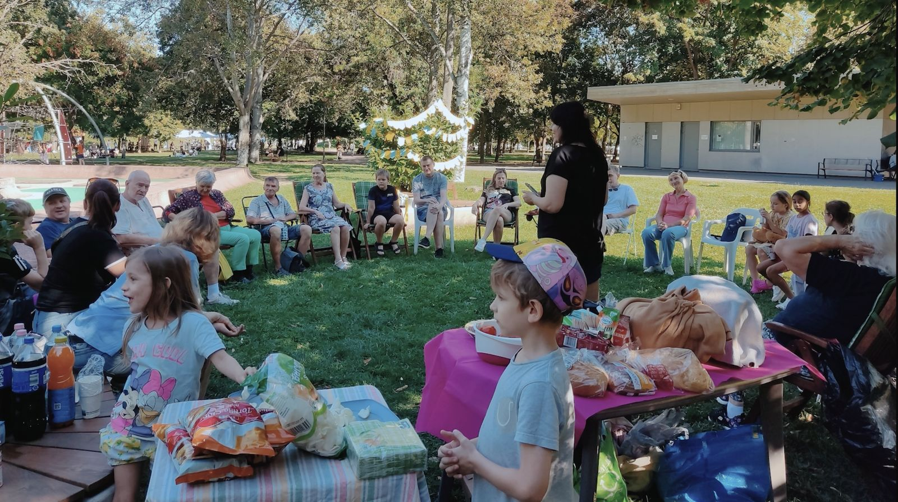
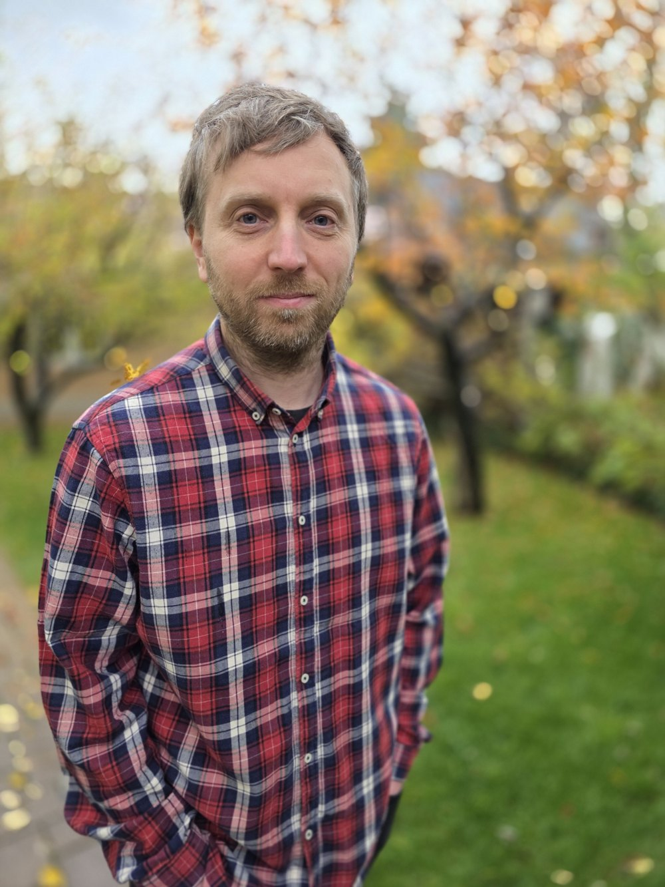

01Групи підтримки
Зустрічі, де говорять рідною мовою і де тебе слухають.

Виїхати — не означає влаштуватися. Чужа мова, нова робота, діти в незнайомій школі, і майже завжди — без звичного кола своїх. Ми будуємо це коло заново: від зустрічі за чаєм і тренування в парку до спільного виїзду, куди їдуть уже цілими родинами. Тут українець будь-якого віку знаходить сенси та своїх.
Наразі маємо розвинене служіння в Будапешті й відкриті до побудови спільнот українців в інших містах Європи та світу.

01Зустрічі, де говорять рідною мовою і де тебе слухають.

02За одним столом — і двадцятирічні, і ті, кому за шістдесят. Читаємо, обговорюємо, п'ємо чай.

03Спортивні зустрічі та вечори біля багаття для чоловіків.

04Безкоштовні заняття з англійської мови для молоді та дорослих.

05Зустрічі для мам маленьких дітей, де мами знаходять спільноту та вивчають англійську разом.

06Кілька днів разом із дітьми й батьками — коли спільнота перестає бути списком у чаті.
Україномовна протестантська спільнота, відкрита до нових людей.
Ми на картіІмена змінено
Спочатку Тетяна прийшла на заняття англійської для мам. Потім разом із чоловіком Олександром вони прийшли на зустріч для сімей — і ми познайомилися ближче.
В Угорщину вони переїхали трохи більше року тому, коли батько Олександра зник безвісти на фронті. Його мама Олена разом із молодшим братиком Артемчиком переїхали з ними.
Це важкий період для їхньої сім'ї: очікування, невідомість і втрата. Олена не полишає спроб шукати чоловіка. «Інакше здається, що я його зрадила», — каже вона зі сльозами на очах.
Артемчик дуже сумує за татом. Олена каже, що він постійно тягнеться до чоловіків. Його старший брат Олександр тепер замінює йому батька. Ми кілька разів запрошували їх у гості, щоб якось розрадити, — наш син подружився з Артемчиком.
У Тетяни батько також служить у війську, а її мама живе в небезпечних місцях, щоб бути ближче до нього.
Моліться про цю сім'ю!

Лідер служіння для українців за кордоном
Email: serhii.pievniev@cru.org